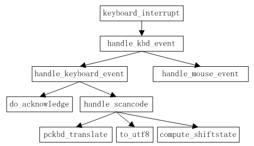

和前面一样，我们说的字符设备驱动主要指的是终端设备驱动。
先从字符设备的打开开始讲，同样，打开需要经过虚拟文件系统然后从file中的file_operations数据结构开始跳转。对于终端设备来说，它的file_operations数据结构如下（drivers/char/tty_io.c）：
1 2 3 4 5 6 7 8 9 10 |
static struct file_operations tty_fops = { llseek: tty_lseek, read: tty_read, write: tty_write, poll: tty_poll, ioctl: tty_ioctl, open: tty_open, release: tty_release, fasync: tty_fasync, }; |
终端设备打开操作：
打开函数是tty_open()，这个函数定义在drivers/char/tty_io.c中：
1 2 3 4 5 6 7 8 9 10 11 12 13 14 15 16 17 18 19 20 21 22 23 24 25 26 27 28 29 30 31 32 33 34 35 36 37 38 39 40 41 42 43 44 45 46 47 48 49 50 51 52 53 54 55 56 57 58 59 60 61 62 63 64 65 66 67 68 69 70 71 72 73 74 75 76 77 78 79 80 81 82 83 84 85 86 87 88 89 90 91 92 93 94 95 96 97 98 99 100 101 102 103 104 105 106 107 108 109 110 111 112 113 114 115 116 117 118 119 120 121 122 123 124 125 126 127 128 129 130 131 132 133 134 135 136 137 138 139 140 141 142 143 144 145 146 147 148 149 150 151 152 153 154 155 156 157 158 159 160 161 162 163 164 165 166 167 168 169 170 171 172 173 174 175 176 177 178 179 180 181 182 183 184 185 186 187 188 189 190 191 192 193 194 195 196 197 198 199 200 201 202 203 204 |
/* * tty_open and tty_release keep up the tty count that contains the * number of opens done on a tty. We cannot use the inode-count, as * different inodes might point to the same tty. * * Open-counting is needed for pty masters, as well as for keeping * track of serial lines: DTR is dropped when the last close happens. * (This is not done solely through tty->count, now. - Ted 1/27/92) * * The termios state of a pty is reset on first open so that * settings don't persist across reuse. */ static int tty_open(struct inode * inode, struct file * filp) { struct tty_struct *tty; int noctty, retval; kdev_t device; unsigned short saved_flags; char buf[64]; saved_flags = filp->f_flags; //保存标志位 retry_open: noctty = filp->f_flags & O_NOCTTY; device = inode->i_rdev; /* *若主设备号为5，次设备号为0则是/dev/tty，就是当前进程的控制终端 *#define TTY_DEV MKDEV(TTYAUX_MAJOR,0) */ if (device == TTY_DEV) { if (!current->tty) return -ENXIO; device = current->tty->device; filp->f_flags |= O_NONBLOCK; /* Don't let /dev/tty block */ /* noctty = 1; */ } /* *此编译选项是对于配备了键盘、显示器等设备的虚拟终端看来说的 *#define CONSOLE_DEV (TTY_MAJOR,0) *#define SYSCONS_DEV (TTYAUX_MAJOR,1) */ #ifdef CONFIG_VT /* *若主设备号为4而次设备号为0则表示/dev/tty0，也就是当前虚拟控制台 *就将其替换成具体的设备号，在支持虚拟控制台的内核中有个全局变量fg_console *表示当前的“前台控制台”，这个变量的数值是从0开始的，而具体的虚拟控制台 *编号是从1开始的，所以这里应该加1 */ if (device == CONSOLE_DEV) { extern int fg_console; device = MKDEV(TTY_MAJOR, fg_console + 1); noctty = 1; } #endif /* *若主设备号为5而次设备号为1表示/dev/console，用于外接控制台， *一般情况下它是连接到当前控制台的，但是在不同的版本里情况不同， *若它不是连接到/dev/tty0而是主设备号为5次设备号为1则内核会把 *一个console数据结构挂入到内核的console_drivers队列中，此后内核 *便会将需要显示的信息输出到所登记的设备上。在这里，如果要打开的 *设备是/dev/console，那么就从队列中找到第一个设备号不为0的console *数据结构，它所提供的设备号就是当前系统控制台的设备号 */ if (device == SYSCONS_DEV) { struct console *c = console_drivers; while(c && !c->device) c = c->next; if (!c) return -ENODEV; device = c->device(c); filp->f_flags |= O_NONBLOCK; /* Don't let /dev/console block */ noctty = 1; } /* *#define PTMX_DEV MKDEV(TTYAUX_MAJOR,2) *主设备号为5而次设备号为2的设备是/dev/ptmx（新版本是/dev/pts/ptmx）， *是用于伪终端设备的，那么伪终端设备两端的主设备号分别为2和3，我们 *这里称主设备号为2的设备为主设备和3的为从设备，可以有256对伪终端 *设备 */ if (device == PTMX_DEV) { /* *此编译选项指的是使用UNIX98中的配套改进方案，打开/dev/ptmx后再对 *伪终端的主设备和从设备号加以动态分配，就不受256个的限制了 *需要初始化两个驱动数组ptm_driver[]和pts_driver[]，分别用于主设备和从设备 */ #ifdef CONFIG_UNIX98_PTYS /* find a free pty. */ int major, minor; struct tty_driver *driver; /* find a device that is not in use. */ retval = -1; /* *依次扫描主设备号，对每个主设备号依次扫描次设备号 */ for ( major = 0 ; major < UNIX98_NR_MAJORS ; major++ ) { driver = &ptm_driver[major]; for (minor = driver->minor_start ; minor < driver->minor_start + driver->num ; minor++) { device = MKDEV(driver->major, minor); if (!init_dev(device, &tty)) goto ptmx_found; /* ok! */ } } return -EIO; /* no free ptys */ ptmx_found: set_bit(TTY_PTY_LOCK, &tty->flags); /* LOCK THE SLAVE */ minor -= driver->minor_start; /* *为相应的次设备创建inode数据结构 */ devpts_pty_new(driver->other->name_base + minor, MKDEV(driver->other->major, minor + driver->other->minor_start)); /* *创建设备节点，如/dev/pts/0等 */ tty_register_devfs(&pts_driver[major], DEVFS_FL_NO_PERSISTENCE, pts_driver[major].minor_start + minor); noctty = 1; goto init_dev_done; #else /* CONFIG_UNIX_98_PTYS */ return -ENODEV; #endif /* CONFIG_UNIX_98_PTYS */ } retval = init_dev(device, &tty); //初始化 if (retval) return retval; #ifdef CONFIG_UNIX98_PTYS init_dev_done: #endif /* *对于普通文件private_data几乎不用，这里建立当前进程和终端设备的连接 */ filp->private_data = tty; /* *将当前终端设备的file结构挂入tty_struct的tty_files队列 */ file_move(filp, &tty->tty_files); check_tty_count(tty, "tty_open"); if (tty->driver.type == TTY_DRIVER_TYPE_PTY && tty->driver.subtype == PTY_TYPE_MASTER) noctty = 1; #ifdef TTY_DEBUG_HANGUP printk("opening %s...", tty_name(tty, buf)); #endif if (tty->driver.open) retval = tty->driver.open(tty, filp); //调用内部的open()方法 else retval = -ENODEV; filp->f_flags = saved_flags; if (!retval && test_bit(TTY_EXCLUSIVE, &tty->flags) && !suser()) retval = -EBUSY; if (retval) { #ifdef TTY_DEBUG_HANGUP printk("error %d in opening %s...", retval, tty_name(tty, buf)); #endif release_dev(filp); if (retval != -ERESTARTSYS) return retval; if (signal_pending(current)) return retval; schedule(); /* * Need to reset f_op in case a hangup happened. */ filp->f_op = &tty_fops; goto retry_open; } if (!noctty && current->leader && !current->tty && tty->session == 0) { task_lock(current); current->tty = tty; task_unlock(current); current->tty_old_pgrp = 0; tty->session = current->session; tty->pgrp = current->pgrp; } if ((tty->driver.type == TTY_DRIVER_TYPE_SERIAL) && (tty->driver.subtype == SERIAL_TYPE_CALLOUT) && (tty->count == 1)) { static int nr_warns; if (nr_warns < 5) { printk(KERN_WARNING "tty_io.c: " "process %d (%s) used obsolete /dev/%s - " "update software to use /dev/ttyS%d\n", current->pid, current->comm, tty_name(tty, buf), TTY_NUMBER(tty)); nr_warns++; } } return 0; } |
在这个函数中，非常重要的一个函数是初始化函数init_dev()，它将各种数据结构连接在了一起，这个函数定义于文件drivers/char/tty_io.c中：
1 2 3 4 5 6 7 8 9 10 11 12 13 14 15 16 17 18 19 20 21 22 23 24 25 26 27 28 29 30 31 32 33 34 35 36 37 38 39 40 41 42 43 44 45 46 47 48 49 50 51 52 53 54 55 56 57 58 59 60 61 62 63 64 65 66 67 68 69 70 71 72 73 74 75 76 77 78 79 80 81 82 83 84 85 86 87 88 89 90 91 92 93 94 95 96 97 98 99 100 101 102 103 104 105 106 107 108 109 110 111 112 113 114 115 116 117 118 119 120 121 122 123 124 125 126 127 128 129 130 131 132 133 134 135 136 137 138 139 140 141 142 143 144 145 146 147 148 149 150 151 152 153 154 155 156 157 158 159 160 161 162 163 164 165 166 167 168 169 170 171 172 173 174 175 176 177 178 179 180 181 182 183 184 185 186 187 188 189 190 191 192 193 194 195 196 197 198 199 200 201 202 203 204 205 206 207 208 209 210 211 212 213 |
/* * WSH 06/09/97: Rewritten to remove races and properly clean up after a * failed open. The new code protects the open with a semaphore, so it's * really quite straightforward. The semaphore locking can probably be * relaxed for the (most common) case of reopening a tty. */ static int init_dev(kdev_t device, struct tty_struct **ret_tty) { struct tty_struct *tty, *o_tty; struct termios *tp, **tp_loc, *o_tp, **o_tp_loc; struct termios *ltp, **ltp_loc, *o_ltp, **o_ltp_loc; struct tty_driver *driver; int retval=0; int idx; driver = get_tty_driver(device); //从tty_drivers链表中找到相应的tty_driver数据结构 if (!driver) return -ENODEV; idx = MINOR(device) - driver->minor_start; /* * Check whether we need to acquire the tty semaphore to avoid * race conditions. For now, play it safe. */ down_tty_sem(idx); /* check whether we're reopening an existing tty */ tty = driver->table[idx]; //指向数组的当前tty_struct if (tty) goto fast_track; //若已经创建，则转向fast_track /* * First time open is complex, especially for PTY devices. * This code guarantees that either everything succeeds and the * TTY is ready for operation, or else the table slots are vacated * and the allocated memory released. (Except that the termios * and locked termios may be retained.) */ o_tty = NULL; tp = o_tp = NULL; ltp = o_ltp = NULL; tty = alloc_tty_struct(); //分配tty_struct空间 if(!tty) goto fail_no_mem; initialize_tty_struct(tty); //初始化tty_struct结构 tty->device = device; tty->driver = *driver; tp_loc = &driver->termios[idx]; //找出本次打开终端的termios结构 if (!*tp_loc) { tp = (struct termios *) kmalloc(sizeof(struct termios), GFP_KERNEL); if (!tp) goto free_mem_out; *tp = driver->init_termios; //从里面的样板复制 } ltp_loc = &driver->termios_locked[idx]; //找出本次打开终端的termios结构 if (!*ltp_loc) { ltp = (struct termios *) kmalloc(sizeof(struct termios), GFP_KERNEL); if (!ltp) goto free_mem_out; memset(ltp, 0, sizeof(struct termios)); //全部初始化为0 } /* *伪终端处理，对于伪终端，则需要成对地创建，在创建了一头的tty以后 *还要创建另一头的o_tty */ if (driver->type == TTY_DRIVER_TYPE_PTY) { o_tty = alloc_tty_struct(); if (!o_tty) goto free_mem_out; initialize_tty_struct(o_tty); o_tty->device = (kdev_t) MKDEV(driver->other->major, driver->other->minor_start + idx); o_tty->driver = *driver->other; o_tp_loc = &driver->other->termios[idx]; if (!*o_tp_loc) { o_tp = (struct termios *) kmalloc(sizeof(struct termios), GFP_KERNEL); if (!o_tp) goto free_mem_out; *o_tp = driver->other->init_termios; } o_ltp_loc = &driver->other->termios_locked[idx]; if (!*o_ltp_loc) { o_ltp = (struct termios *) kmalloc(sizeof(struct termios), GFP_KERNEL); if (!o_ltp) goto free_mem_out; memset(o_ltp, 0, sizeof(struct termios)); } /* * Everything allocated ... set up the o_tty structure. */ driver->other->table[idx] = o_tty; if (!*o_tp_loc) *o_tp_loc = o_tp; if (!*o_ltp_loc) *o_ltp_loc = o_ltp; o_tty->termios = *o_tp_loc; o_tty->termios_locked = *o_ltp_loc; (*driver->other->refcount)++; if (driver->subtype == PTY_TYPE_MASTER) o_tty->count++; /* Establish the links in both directions */ tty->link = o_tty; o_tty->link = tty; } /* * All structures have been allocated, so now we install them. * Failures after this point use release_mem to clean up, so * there's no need to null out the local pointers. */ driver->table[idx] = tty; if (!*tp_loc) *tp_loc = tp; if (!*ltp_loc) *ltp_loc = ltp; tty->termios = *tp_loc; tty->termios_locked = *ltp_loc; (*driver->refcount)++; tty->count++; /* * Structures all installed ... call the ldisc open routines. * If we fail here just call release_mem to clean up. No need * to decrement the use counts, as release_mem doesn't care. */ if (tty->ldisc.open) { retval = (tty->ldisc.open)(tty); //调用底层（链路规则）的open()初始化 if (retval) goto release_mem_out; } if (o_tty && o_tty->ldisc.open) { retval = (o_tty->ldisc.open)(o_tty); //调用底层（链路规则）的open()初始化 if (retval) { if (tty->ldisc.close) (tty->ldisc.close)(tty); //调用底层（链路规则）的close() goto release_mem_out; } } goto success; /* * This fast open can be used if the tty is already open. * No memory is allocated, and the only failures are from * attempting to open a closing tty or attempting multiple * opens on a pty master. */ /* *若tty已经打开，则转向此处，设置数据结构，共享计数自加等 */ fast_track: if (test_bit(TTY_CLOSING, &tty->flags)) { retval = -EIO; goto end_init; } if (driver->type == TTY_DRIVER_TYPE_PTY && driver->subtype == PTY_TYPE_MASTER) { /* * special case for PTY masters: only one open permitted, * and the slave side open count is incremented as well. */ if (tty->count) { retval = -EIO; goto end_init; } tty->link->count++; } tty->count++; tty->driver = *driver; /* N.B. why do this every time?? */ success: *ret_tty = tty; /* All paths come through here to release the semaphore */ end_init: up_tty_sem(idx); return retval; /* Release locally allocated memory ... nothing placed in slots */ free_mem_out: if (o_tp) kfree(o_tp); if (o_tty) free_tty_struct(o_tty); if (ltp) kfree(ltp); if (tp) kfree(tp); free_tty_struct(tty); fail_no_mem: retval = -ENOMEM; goto end_init; /* call the tty release_mem routine to clean out this slot */ release_mem_out: printk("init_dev: ldisc open failed, clearing slot %d\n", idx); release_mem(tty, idx); goto end_init; } |
初始化tty_struct结构的函数initialize_tty_struct()定义在drivers/char/tty_io.c中：
1 2 3 4 5 6 7 8 9 10 11 12 13 14 15 16 17 18 19 20 21 22 23 |
/* * This subroutine initializes a tty structure. */ static void initialize_tty_struct(struct tty_struct *tty) { memset(tty, 0, sizeof(struct tty_struct)); tty->magic = TTY_MAGIC; tty->ldisc = ldiscs[N_TTY]; //整体赋值 tty->pgrp = -1; tty->flip.char_buf_ptr = tty->flip.char_buf; tty->flip.flag_buf_ptr = tty->flip.flag_buf; tty->flip.tqueue.routine = flush_to_ldisc; tty->flip.tqueue.data = tty; init_MUTEX(&tty->flip.pty_sem); init_waitqueue_head(&tty->write_wait); init_waitqueue_head(&tty->read_wait); tty->tq_hangup.routine = do_tty_hangup; tty->tq_hangup.data = tty; sema_init(&tty->atomic_read, 1); sema_init(&tty->atomic_write, 1); spin_lock_init(&tty->read_lock); INIT_LIST_HEAD(&tty->tty_files); } |
不管哪一种终端设备，开始时总是采用标号为N_TTY的tty_ldisc数据结构，实际上是tty_ldisc_N_TTY，定义于drivers/char/n_tty.c中：
1 2 3 4 5 6 7 8 9 10 11 12 13 14 15 16 17 18 |
struct tty_ldisc tty_ldisc_N_TTY = { TTY_LDISC_MAGIC, /* magic */ "n_tty", /* name */ 0, /* num */ 0, /* flags */ n_tty_open, /* open */ n_tty_close, /* close */ n_tty_flush_buffer, /* flush_buffer */ n_tty_chars_in_buffer, /* chars_in_buffer */ read_chan, /* read */ write_chan, /* write */ n_tty_ioctl, /* ioctl */ n_tty_set_termios, /* set_termios */ normal_poll, /* poll */ n_tty_receive_buf, /* receive_buf */ n_tty_receive_room, /* receive_room */ 0 /* write_wakeup */ }; |
其open指针就是指向函数n_tty_open()，这个函数定义于drivers/char/n_tty.c中：
1 2 3 4 5 6 7 8 9 10 11 12 13 14 15 16 17 18 19 20 21 22 23 24 25 26 27 28 29 30 31 |
static int n_tty_open(struct tty_struct *tty) { if (!tty) return -EINVAL; /* *在讲前面的tty_flip_buffer时候讲过，那个数据结构中的缓冲区是用来 *盛放从底层中断服务程序接收来的字符的，但是一般终端都是工作在 *“加工模式”，tty_struct里的buff缓冲区是用来盛放加工过的字符的 *若打开时发现没有则需要分配，大小为一个页面 */ if (!tty->read_buf) { tty->read_buf = alloc_buf(); if (!tty->read_buf) return -ENOMEM; } memset(tty->read_buf, 0, N_TTY_BUF_SIZE); /* *重置字符标志 */ reset_buffer_flags(tty); tty->column = 0; /* *根据终端设备的termios数据结构设置其tty_struct结构中的process_char_map *和其他的几个标志位 */ n_tty_set_termios(tty, 0); tty->minimum_to_wake = 1; tty->closing = 0; return 0; } |
函数reset_buffer_flags()定义在drivers/char/n_tty.c中：
1 2 3 4 5 6 7 8 9 10 11 12 13 14 15 16 |
/* * Reset the read buffer counters, clear the flags, * and make sure the driver is unthrottled. Called * from n_tty_open() and n_tty_flush_buffer(). */ static void reset_buffer_flags(struct tty_struct *tty) { unsigned long flags; spin_lock_irqsave(&tty->read_lock, flags); tty->read_head = tty->read_tail = tty->read_cnt = 0; //缓冲区中当前读出位置的下标 spin_unlock_irqrestore(&tty->read_lock, flags); tty->canon_head = tty->canon_data = tty->erasing = 0;//缓冲区中当前读出位置的下标 memset(&tty->read_flags, 0, sizeof tty->read_flags); //清除位图 check_unthrottle(tty); } |
函数n_tty_set_termios()定义在drivers/char/n_tty.c中：
1 2 3 4 5 6 7 8 9 10 11 12 13 14 15 16 17 18 19 20 21 22 23 24 25 26 27 28 29 30 31 32 33 34 35 36 37 38 39 40 41 42 43 44 45 46 47 48 49 50 51 52 53 54 55 56 57 58 59 60 61 62 63 64 65 66 67 68 69 |
static void n_tty_set_termios(struct tty_struct *tty, struct termios * old) { /* *tty_struct结构中的process_char_map中的每一位对应着一个字符 *若某一位为1则表示这个字符需要进行加工处理，具体的处理方法 *读者可以参考毛老先生的书上，这里不是我们的重点 */ if (!tty) return; tty->icanon = (L_ICANON(tty) != 0); if (test_bit(TTY_HW_COOK_IN, &tty->flags)) { tty->raw = 1; tty->real_raw = 1; return; } if (I_ISTRIP(tty) || I_IUCLC(tty) || I_IGNCR(tty) || I_ICRNL(tty) || I_INLCR(tty) || L_ICANON(tty) || I_IXON(tty) || L_ISIG(tty) || L_ECHO(tty) || I_PARMRK(tty)) { cli(); memset(tty->process_char_map, 0, 256/8); if (I_IGNCR(tty) || I_ICRNL(tty)) set_bit('\r', &tty->process_char_map); if (I_INLCR(tty)) set_bit('\n', &tty->process_char_map); if (L_ICANON(tty)) { set_bit(ERASE_CHAR(tty), &tty->process_char_map); set_bit(KILL_CHAR(tty), &tty->process_char_map); set_bit(EOF_CHAR(tty), &tty->process_char_map); set_bit('\n', &tty->process_char_map); set_bit(EOL_CHAR(tty), &tty->process_char_map); if (L_IEXTEN(tty)) { set_bit(WERASE_CHAR(tty), &tty->process_char_map); set_bit(LNEXT_CHAR(tty), &tty->process_char_map); set_bit(EOL2_CHAR(tty), &tty->process_char_map); if (L_ECHO(tty)) set_bit(REPRINT_CHAR(tty), &tty->process_char_map); } } if (I_IXON(tty)) { set_bit(START_CHAR(tty), &tty->process_char_map); set_bit(STOP_CHAR(tty), &tty->process_char_map); } if (L_ISIG(tty)) { set_bit(INTR_CHAR(tty), &tty->process_char_map); set_bit(QUIT_CHAR(tty), &tty->process_char_map); set_bit(SUSP_CHAR(tty), &tty->process_char_map); } clear_bit(__DISABLED_CHAR, &tty->process_char_map); sti(); tty->raw = 0; tty->real_raw = 0; } else { tty->raw = 1; if ((I_IGNBRK(tty) || (!I_BRKINT(tty) && !I_PARMRK(tty))) && (I_IGNPAR(tty) || !I_INPCK(tty)) && (tty->driver.flags & TTY_DRIVER_REAL_RAW)) tty->real_raw = 1; else tty->real_raw = 0; } } |
前面我们说了，最后要调用tty_driver中的打开函数指针，对于控制台来说，这个指针指向函数con_open()，定义于drivers/char/console.c中：
1 2 3 4 5 6 7 8 9 10 11 12 13 14 15 16 17 18 19 20 21 22 23 24 25 |
/* * Allocate the console screen memory. */ static int con_open(struct tty_struct *tty, struct file * filp) { unsigned int currcons; int i; currcons = MINOR(tty->device) - tty->driver.minor_start; i = vc_allocate(currcons); if (i) return i; vt_cons[currcons]->vc_num = currcons; tty->driver_data = vt_cons[currcons]; if (!tty->winsize.ws_row && !tty->winsize.ws_col) { tty->winsize.ws_row = video_num_lines; tty->winsize.ws_col = video_num_columns; } if (tty->count == 1) vcs_make_devfs (currcons, 0); return 0; } |
作用是为了当前的虚拟终端分配缓冲区和数据结构等，具体的就不多说了。
终端设备读操作：
从上面的file_operations跳转表可以看出，终端设备的读操作从函数tty_read()开始的，从这个函数开始包括了一系列的键盘、VGA显卡等的驱动，为了阅读方便，我们这里给出函数调用关系表：
{kind=link}
函数tty_read()定义在drivers/char/tty_io.c中：
1 2 3 4 5 6 7 8 9 10 11 12 13 14 15 16 17 18 19 20 21 22 23 24 25 26 27 28 29 30 31 32 33 34 35 36 37 38 39 40 41 42 43 44 |
static ssize_t tty_read(struct file * file, char * buf, size_t count, loff_t *ppos) { int i; struct tty_struct * tty; struct inode *inode; /* Can't seek (pread) on ttys. */ if (ppos != &file->f_pos) return -ESPIPE; tty = (struct tty_struct *)file->private_data; //取得其tty_struct结构 inode = file->f_dentry->d_inode; if (tty_paranoia_check(tty, inode->i_rdev, "tty_read")) return -EIO; if (!tty || (test_bit(TTY_IO_ERROR, &tty->flags))) return -EIO; /* This check not only needs to be done before reading, but also whenever read_chan() gets woken up after sleeping, so I've moved it to there. This should only be done for the N_TTY line discipline, anyway. Same goes for write_chan(). -- jlc. */ #if 0 if ((inode->i_rdev != CONSOLE_DEV) && /* don't stop on /dev/console */ (tty->pgrp > 0) && (current->tty == tty) && (tty->pgrp != current->pgrp)) if (is_ignored(SIGTTIN) || is_orphaned_pgrp(current->pgrp)) return -EIO; else { (void) kill_pg(current->pgrp, SIGTTIN, 1); return -ERESTARTSYS; } #endif lock_kernel(); if (tty->ldisc.read) i = (tty->ldisc.read)(tty,file,buf,count); //进入下一层的read else i = -EIO; unlock_kernel(); if (i > 0) inode->i_atime = CURRENT_TIME; return i; } |
链路规则层的read指针指向函数read_chan()，这个函数定义于drivers/char/n_tty.c中：
1 2 3 4 5 6 7 8 9 10 11 12 13 14 15 16 17 18 19 20 21 22 23 24 25 26 27 28 29 30 31 32 33 34 35 36 37 38 39 40 41 42 43 44 45 46 47 48 49 50 51 52 53 54 55 56 57 58 59 60 61 62 63 64 65 66 67 68 69 70 71 72 73 74 75 76 77 78 79 80 81 82 83 84 85 86 87 88 89 90 91 92 93 94 95 96 97 98 99 100 101 102 103 104 105 106 107 108 109 110 111 112 113 114 115 116 117 118 119 120 121 122 123 124 125 126 127 128 129 130 131 132 133 134 135 136 137 138 139 140 141 142 143 144 145 146 147 148 149 150 151 152 153 154 155 156 157 158 159 160 161 162 163 164 165 166 167 168 169 170 171 172 173 174 175 176 177 178 179 180 181 182 183 184 185 186 187 188 189 190 191 192 193 194 195 196 197 198 199 200 201 202 203 204 205 206 207 208 209 210 211 212 213 214 215 216 217 218 219 220 221 222 223 224 225 226 227 228 229 230 231 232 233 234 235 236 237 238 239 240 241 242 243 244 245 246 247 248 249 250 251 252 |
static ssize_t read_chan(struct tty_struct *tty, struct file *file, unsigned char *buf, size_t nr) { unsigned char *b = buf; DECLARE_WAITQUEUE(wait, current); int c; int minimum, time; ssize_t retval = 0; ssize_t size; long timeout; unsigned long flags; do_it_again: if (!tty->read_buf) { //无缓冲区 printk("n_tty_read_chan: called with read_buf == NULL?!?\n"); return -EIO; } /* Job control check -- must be done at start and after every sleep (POSIX.1 7.1.1.4). */ /* NOTE: not yet done after every sleep pending a thorough check of the logic of this change. -- jlc */ /* don't stop on /dev/console */ //what is the fucking this??? if (file->f_dentry->d_inode->i_rdev != CONSOLE_DEV && file->f_dentry->d_inode->i_rdev != SYSCONS_DEV && current->tty == tty) { if (tty->pgrp <= 0) printk("read_chan: tty->pgrp <= 0!\n"); else if (current->pgrp != tty->pgrp) { if (is_ignored(SIGTTIN) || is_orphaned_pgrp(current->pgrp)) return -EIO; kill_pg(current->pgrp, SIGTTIN, 1); return -ERESTARTSYS; } } minimum = time = 0; timeout = MAX_SCHEDULE_TIMEOUT; /* *当工作于“原始”模式或者非“规范”模式时，当缓冲区中有了最低限度的 *数据量minimum_to_wake时，就要唤醒正在等待从该设备读出的进程，这里 *为其确定一个数值 */ if (!tty->icanon) { time = (HZ / 10) * TIME_CHAR(tty); minimum = MIN_CHAR(tty); if (minimum) { if (time) tty->minimum_to_wake = 1; else if (!waitqueue_active(&tty->read_wait) || (tty->minimum_to_wake > minimum)) tty->minimum_to_wake = minimum; } else { timeout = 0; if (time) { timeout = time; time = 0; } tty->minimum_to_wake = minimum = 1; } } if (file->f_flags & O_NONBLOCK) { if (down_trylock(&tty->atomic_read)) return -EAGAIN; } else { if (down_interruptible(&tty->atomic_read)) return -ERESTARTSYS; } /* *在当前进程的系统堆栈中准备下一个wait_queue_t数据结构wait，并将其 *挂入目标终端的等待队列read_wait中，使终端设备的驱动程序在有数据可读 *时可以唤醒这个进程 */ add_wait_queue(&tty->read_wait, &wait); set_bit(TTY_DONT_FLIP, &tty->flags); /* *循环字符 */ while (nr) { /* First test for status change. */ /* *对于伪终端设备，可以将终端设置成packet模式，因为这两端 *有时候在通过网络连接的不同计算机中，这种情况下tty->packet为1 *而若tty->link->ctrl_status非0就表示有反应通信链路状态变化的控制 *信息需要优先提交 */ if (tty->packet && tty->link->ctrl_status) { unsigned char cs; if (b != buf) break; cs = tty->link->ctrl_status; tty->link->ctrl_status = 0; put_user(cs, b++); nr--; break; } /* This statement must be first before checking for input so that any interrupt will set the state back to TASK_RUNNING. */ set_current_state(TASK_INTERRUPTIBLE); //睡眠等待唤醒 /* *b开始时和buf相同，但是每读取一个字符b加1，所以b-buf就是 *已经读出的字符数 */ if (((minimum - (b - buf)) < tty->minimum_to_wake) && ((minimum - (b - buf)) >= 1)) tty->minimum_to_wake = (minimum - (b - buf)); if (!input_available_p(tty, 0)) { //检查输入缓冲区中有无字符，此处条件没有执行 /* *若输入缓冲区中没有字符，那么除非有特殊情况，否则睡眠等待 *等缓冲区中有字符了才会唤醒 */ if (test_bit(TTY_OTHER_CLOSED, &tty->flags)) { retval = -EIO; break; } if (tty_hung_up_p(file)) break; if (!timeout) break; if (file->f_flags & O_NONBLOCK) { retval = -EAGAIN; break; } if (signal_pending(current)) { retval = -ERESTARTSYS; break; } clear_bit(TTY_DONT_FLIP, &tty->flags); timeout = schedule_timeout(timeout); set_bit(TTY_DONT_FLIP, &tty->flags); continue; } /* *进程已经唤醒，缓冲区中有数据 */ current->state = TASK_RUNNING; /* Deal with packet mode. */ if (tty->packet && b == buf) { put_user(TIOCPKT_DATA, b++); nr--; } if (tty->icanon) { //规范模式，缓冲区中字符是经过加工了的 /* N.B. avoid overrun if nr == 0 */ /* *规范模式下缓冲区中的字符要累积起一个“缓冲行”，即碰到'\n'字符 *时才会唤醒等待读出的进程，此时tty->read_cnt表示缓冲行中的字符个数 *tty->read_buff[]是个循环缓冲，tty->read_tail指向当前可供读出的第一个 *字符，若tty->read_flags中的对应于tty->read_tail这一位为1表示这个 *位置上已经是缓冲行的终点，此后的数据是属于另外一个缓冲行 */ while (nr && tty->read_cnt) { int eol; /* *eol表示到达了缓冲行终点 */ eol = test_and_clear_bit(tty->read_tail, &tty->read_flags); c = tty->read_buf[tty->read_tail]; spin_lock_irqsave(&tty->read_lock, flags); tty->read_tail = ((tty->read_tail+1) & (N_TTY_BUF_SIZE-1)); tty->read_cnt--; spin_unlock_irqrestore(&tty->read_lock, flags); /* *eol表示到达了缓冲行终点，而__DISABLED_CHAR表示字符'\0' * #define __DISABLED_CHAR '\0' *这里表示若未到达缓冲行终点或者未到达字符终点就复制 */ if (!eol || (c != __DISABLED_CHAR)) { put_user(c, b++); //将字符复制到用户空间中去 nr--; } if (eol) { /* this test should be redundant: * we shouldn't be reading data if * canon_data is 0 */ if (--tty->canon_data < 0) tty->canon_data = 0; break; } } } else { /* *对于非规范模式就直接复制，因为是循环缓冲，所以可能字符 *被分成两段，需要分两次复制 */ int uncopied; uncopied = copy_from_read_buf(tty, &b, &nr); uncopied += copy_from_read_buf(tty, &b, &nr); if (uncopied) { retval = -EFAULT; break; } } /* If there is enough space in the read buffer now, let the * low-level driver know. We use n_tty_chars_in_buffer() to * check the buffer, as it now knows about canonical mode. * Otherwise, if the driver is throttled and the line is * longer than TTY_THRESHOLD_UNTHROTTLE in canonical mode, * we won't get any more characters. */ /* *由于缓冲区的大小有限，如果输入字符过快而导致缓冲区不够，那么会 *暂时关闭输入，不接收输入字符并将进程睡眠，但是在缓冲区的空闲数量 *达到一定程度(TTY_THRESHOLD_UNTHROTTLE)后会将进程唤醒 */ if (n_tty_chars_in_buffer(tty) <= TTY_THRESHOLD_UNTHROTTLE) check_unthrottle(tty); //检查并唤醒等待输入的进程 if (b - buf >= minimum) break; if (time) timeout = time; } clear_bit(TTY_DONT_FLIP, &tty->flags); up(&tty->atomic_read); remove_wait_queue(&tty->read_wait, &wait); //将已经读完的进程从等待队列拆除 if (!waitqueue_active(&tty->read_wait)) tty->minimum_to_wake = minimum; current->state = TASK_RUNNING; size = b - buf; if (size) { retval = size; /* *TTY_PUSH是由底层驱动程序在读到一个EOF字符并将其放入 *缓冲区中设置成1的，表示用户应该尽快将该字符取走，在取走 *以后又清0 */ if (nr) clear_bit(TTY_PUSH, &tty->flags); } else if (test_and_clear_bit(TTY_PUSH, &tty->flags)) goto do_it_again; return retval; } |
It’s a vary long function!
一般而言，一个典型的读终端过程可以分为以下三个部分：
1、当前进程企图从终端的缓冲区读出，但是因为当前缓冲区中尚无足够的字符而受阻进入睡眠状态；
2、当使用者在键盘上输入字符，底层驱动程序将足够的字符写入缓冲区以后就把睡眠中的进程唤醒；
3、睡眠中的进程被唤醒，继续读出字符。
在read_chan()中调用的一些函数这里列出如下：
一是检查输入缓冲区中有无字符可供读出的函数，在“规范模式”下，检查的是经过加工过后的字符，而在原始模式就是原始字符数量，函数input_available_p()定义于drivers/char/n_tty.c中：
1 2 3 4 5 6 7 8 9 10 |
static inline int input_available_p(struct tty_struct *tty, int amt) { if (tty->icanon) { if (tty->canon_data) return 1; } else if (tty->read_cnt >= (amt ? amt : 1)) return 1; return 0; } |
还有一个就是复制原始模式缓冲区字符的函数copy_from_read_buf()，这个函数定义于drivers/char/n_tty.c中：
1 2 3 4 5 6 7 8 9 10 11 12 13 14 15 16 17 18 19 20 21 22 23 24 25 26 27 28 29 30 31 32 33 34 |
/* * Helper function to speed up read_chan. It is only called when * ICANON is off; it copies characters straight from the tty queue to * user space directly. It can be profitably called twice; once to * drain the space from the tail pointer to the (physical) end of the * buffer, and once to drain the space from the (physical) beginning of * the buffer to head pointer. */ static inline int copy_from_read_buf(struct tty_struct *tty, unsigned char **b, size_t *nr) { int retval; ssize_t n; unsigned long flags; retval = 0; spin_lock_irqsave(&tty->read_lock, flags); n = MIN(*nr, MIN(tty->read_cnt, N_TTY_BUF_SIZE - tty->read_tail)); spin_unlock_irqrestore(&tty->read_lock, flags); if (n) { mb(); retval = copy_to_user(*b, &tty->read_buf[tty->read_tail], n); n -= retval; spin_lock_irqsave(&tty->read_lock, flags); tty->read_tail = (tty->read_tail + n) & (N_TTY_BUF_SIZE-1); tty->read_cnt -= n; spin_unlock_irqrestore(&tty->read_lock, flags); *b += n; *nr -= n; } return retval; } |
另外还有一个检查并唤醒进程的函数check_unthrottle()，定义于drivers/char/n_tty.c中：
1 2 3 4 5 6 7 8 9 10 11 12 |
/* * Check whether to call the driver.unthrottle function. * We test the TTY_THROTTLED bit first so that it always * indicates the current state. */ static void check_unthrottle(struct tty_struct * tty) { if (tty->count && test_and_clear_bit(TTY_THROTTLED, &tty->flags) && tty->driver.unthrottle) tty->driver.unthrottle(tty); } |
对于终端控制台，最终调用的函数是con_unthrottle()，定义于drivers/char/console.c中：
1 2 3 4 5 6 |
static void con_unthrottle(struct tty_struct *tty) { struct vt_struct *vt = (struct vt_struct *) tty->driver_data; wake_up_interruptible(&vt->paste_wait); } |
以上说的是在上层，都是以字符缓冲区为主的，但是把字符放入字符缓冲区的是下层的键盘等的驱动函数，键盘是由中断驱动的，它的中断服务程序是函数keyboard_interrupt()，每当我们按下键盘，就调用此中断服务程序，为了方便理解，我们还是给出函数调用关系图如下：

{kind=link}
关于键盘扫描码等识别请参考赵炯《Linux内核源代码导读》以及Diers OS中的键盘驱动部分。
我们每按下或者放开一个按键都发送一次中断请求，按下和放开产生不同的键盘扫描码，然后软件从相应I/O口读出扫描码等，其服务程序入口keyboard_interrupt()定义于drivers/char/pc_keyb.c中：
1 2 3 4 5 6 7 8 9 10 11 12 13 |
static void keyboard_interrupt(int irq, void *dev_id, struct pt_regs *regs) { #ifdef CONFIG_VT kbd_pt_regs = regs; #endif /* *为了防止多处理器对一次按键的操作，这里需要加锁 */ spin_lock_irq(&kbd_controller_lock); handle_kbd_event(); spin_unlock_irq(&kbd_controller_lock); } |
函数handle_kbd_event()定义于drivers/char/pc_keyb.c中：
1 2 3 4 5 6 7 8 9 10 11 12 13 14 15 16 17 18 19 20 21 22 23 24 25 26 27 28 29 30 31 32 33 34 35 36 37 38 39 40 41 42 43 44 45 46 47 48 49 50 51 52 |
/* * This reads the keyboard status port, and does the * appropriate action. * * It requires that we hold the keyboard controller * spinlock. */ static unsigned char handle_kbd_event(void) { /* *从控制/状态寄存器中取出键盘状态 * #define kbd_read_input() inb(KBD_DATA_REG) * #define kbd_read_status() inb(KBD_STATUS_REG) */ unsigned char status = kbd_read_status(); unsigned int work = 10000; /* *在键盘状态寄存器中有个OBF(Output Buffer Full)标志，为1表示键盘 *内部缓冲区中有数据，可以读出，全部读出后表为0，若读出1000次 *OBF还是1那就是键盘出问题了，否则，缓冲区中可能只有一个或者 *多个字符 */ while ((--work > 0) && (status & KBD_STAT_OBF)) { unsigned char scancode; scancode = kbd_read_input(); //读出键盘扫描码 /* Error bytes must be ignored to make the Synaptics touchpads compaq use work */ #if 1 /* Ignore error bytes */ if (!(status & (KBD_STAT_GTO | KBD_STAT_PERR))) #endif { /* *鼠标和键盘是共用同一个I/O接口的，这里需要确定中断来源 */ if (status & KBD_STAT_MOUSE_OBF) handle_mouse_event(scancode); else handle_keyboard_event(scancode); } status = kbd_read_status(); } if (!work) printk(KERN_ERR "pc_keyb: controller jammed (0x%02X).\n", status); return status; } |
这里只说键盘驱动，函数handle_keyboard_event()定义于drivers/char/pc_keyb.c中：
1 2 3 4 5 6 7 8 9 10 11 12 13 14 15 16 17 18 19 20 |
static unsigned char kbd_exists = 1; static inline void handle_keyboard_event(unsigned char scancode) { #ifdef CONFIG_VT kbd_exists = 1; /* *键盘在在收到数据后都要送回一个KBD_REPLY_ACK予以确认 *或者KBD_REPLY_RESEND要求重发，这两个字符应该不能作为 *正常输入，所以用do_scknowledge()来检测并丢弃 */ if (do_acknowledge(scancode)) /* *处理扫描码，第一个参数是扫描码，第二个参数为1表示是按下的 *扫描码，为0表示是按键弹起的扫描码 */ handle_scancode(scancode, !(scancode & 0x80)); #endif tasklet_schedule(&keyboard_tasklet); //挂入键盘tasklet队列 } |
我们知道，我们按下一个按键可能产生一个扫描码，也可能产生好几个扫描码，这个函数是对于一个扫描码的处理。
函数do_scknowledge()的代码在drivers/char/pc_keyb.c中：
1 2 3 4 5 6 7 8 9 10 11 12 13 14 15 16 17 18 19 20 21 22 23 24 25 |
static int do_acknowledge(unsigned char scancode) { if (reply_expected) { /* Unfortunately, we must recognise these codes only if we know they * are known to be valid (i.e., after sending a command), because there * are some brain-damaged keyboards (yes, FOCUS 9000 again) which have * keys with such codes :( */ if (scancode == KBD_REPLY_ACK) { acknowledge = 1; reply_expected = 0; return 0; } else if (scancode == KBD_REPLY_RESEND) { resend = 1; reply_expected = 0; return 0; } /* Should not happen... */ #if 0 printk(KERN_DEBUG "keyboard reply expected - got %02x\n", scancode); #endif } return 1; } |
函数handle_scancode()的代码定义在drivers/char/keyboard.c中：
1 2 3 4 5 6 7 8 9 10 11 12 13 14 15 16 17 18 19 20 21 22 23 24 25 26 27 28 29 30 31 32 33 34 35 36 37 38 39 40 41 42 43 44 45 46 47 48 49 50 51 52 53 54 55 56 57 58 59 60 61 62 63 64 65 66 67 68 69 70 71 72 73 74 75 76 77 78 79 80 81 82 83 84 85 86 87 88 89 90 91 92 93 94 95 96 97 98 99 100 101 102 103 104 105 106 107 108 109 110 111 112 113 114 115 116 117 118 119 120 121 122 123 124 125 126 127 128 129 130 131 132 133 134 135 136 137 138 139 140 141 142 143 144 145 146 147 148 149 150 151 152 153 154 155 156 157 158 159 160 161 162 163 |
void handle_scancode(unsigned char scancode, int down) { unsigned char keycode; char up_flag = down ? 0 : 0200; char raw_mode; pm_access(pm_kbd); //电源管理接口，这里是个空函数 do_poke_blanked_console = 1; /* *中断服务程序不宜太长，所以有些比较耗时的操作就应该放在bh或者tasklet中 *完成，对于虚拟控制台的切换就是这样一种操作，为此，控制台操作有一个tasklet *这里将其挂入队列 */ tasklet_schedule(&console_tasklet); add_keyboard_randomness(scancode | up_flag); //和随机数有关，增加伪随机数的随机性 /* *PC机的控制台终端由显示器和键盘组成，所以除了tty_struct数据结构外 *还有个kbd_struct数据结构，每个虚拟终端都有自己的tty_struct和kbd_struct *在内核中分别有两个数组ttytab[]和kbd_table[]，同时tty和kbd两个全局指针 *分别指向当前虚拟终端的结构，fg_console是当前虚拟终端号 */ tty = ttytab? ttytab[fg_console]: NULL; if (tty && (!tty->driver_data)) { /* * We touch the tty structure via the the ttytab array * without knowing whether or not tty is open, which * is inherently dangerous. We currently rely on that * fact that console_open sets tty->driver_data when * it opens it, and clears it when it closes it. */ tty = NULL; } kbd = kbd_table + fg_console; /* *如果终端的键盘工作于“原始模式”VC_RAW，那就直接把扫描码放在 *键盘的接收队列中，否则就转换成“键码”后再放入队列 */ if ((raw_mode = (kbd->kbdmode == VC_RAW))) { put_queue(scancode | up_flag); /* we do not return yet, because we want to maintain the key_down array, so that we have the correct values when finishing RAW mode or when changing VT's */ } /* * Convert scancode to keycode * 转换键码 * #define kbd_translate pckbd_translate */ if (!kbd_translate(scancode, &keycode, raw_mode)) return; /* * At this point the variable `keycode' contains the keycode. * Note: the keycode must not be 0 (++Geert: on m68k 0 is valid). * We keep track of the up/down status of the key, and * return the keycode if in MEDIUMRAW mode. */ /* *全局位图key_down用来记录各个按键的状态，若按键处于弹起状态 *那就把位图中相应位设置成0，若本来就为0则说明至少是漏了一个 *扫描码，要调用kbd_unexpected_up()，若按键处于按下状态，就要把 *相应位设置成1，若本来就是1，那么就说明用户在按着这个按键不放 *就开始了自动重复功能，这时候返回的rep不为0 */ if (up_flag) { //按键弹起 rep = 0; if(!test_and_clear_bit(keycode, key_down)) up_flag = kbd_unexpected_up(keycode); } else //按键按下 rep = test_and_set_bit(keycode, key_down); #ifdef CONFIG_MAGIC_SYSRQ /* Handle the SysRq Hack */ if (keycode == SYSRQ_KEY) { sysrq_pressed = !up_flag; return; } else if (sysrq_pressed) { if (!up_flag) { handle_sysrq(kbd_sysrq_xlate[keycode], kbd_pt_regs, kbd, tty); return; } } #endif if (kbd->kbdmode == VC_MEDIUMRAW) {//“半原始”状态，此时已经可以放入队列 /* soon keycodes will require more than one byte */ put_queue(keycode + up_flag); raw_mode = 1; /* Most key classes will be ignored */ } /* * Small change in philosophy: earlier we defined repetition by * rep = keycode == prev_keycode; * prev_keycode = keycode; * but now by the fact that the depressed key was down already. * Does this ever make a difference? Yes. */ /* * Repeat a key only if the input buffers are empty or the * characters get echoed locally. This makes key repeat usable * with slow applications and under heavy loads. */ /* *对于正常状态的键盘输入，这个是无条件的，但是对于重复按键的输入，键盘 *必须工作于VC_REPEAT模式，并且满足如下两个条件之一： *1、终端运行于echo模式 *2、缓冲区已空 *然后可以进行最后一步转换并将其放入队列 */ if (!rep || (vc_kbd_mode(kbd,VC_REPEAT) && tty && (L_ECHO(tty) || (tty->driver.chars_in_buffer(tty) == 0)))) { u_short keysym; u_char type; /* the XOR below used to be an OR */ int shift_final = (shift_state | kbd->slockstate) ^ kbd->lockstate; ushort *key_map = key_maps[shift_final]; if (key_map != NULL) { keysym = key_map[keycode]; type = KTYP(keysym); if (type >= 0xf0) { type -= 0xf0; if (raw_mode && ! (TYPES_ALLOWED_IN_RAW_MODE & (1 << type))) return; if (type == KT_LETTER) { type = KT_LATIN; if (vc_kbd_led(kbd, VC_CAPSLOCK)) { key_map = key_maps[shift_final ^ (1<<KG_SHIFT)]; if (key_map) keysym = key_map[keycode]; } } (*key_handler[type])(keysym & 0xff, up_flag); if (type != KT_SLOCK) kbd->slockstate = 0; } else { /* maybe only if (kbd->kbdmode == VC_UNICODE) ? */ if (!up_flag && !raw_mode) to_utf8(keysym); } } else { /* maybe beep? */ /* we have at least to update shift_state */ #if 1 /* how? two almost equivalent choices follow */ compute_shiftstate(); kbd->slockstate = 0; /* play it safe */ #else keysym = U(plain_map[keycode]); type = KTYP(keysym); if (type == KT_SHIFT) (*key_handler[type])(keysym & 0xff, up_flag); #endif } } } |
由于具体转换方式不是我们所关心的内容，所以这里就不讨论了。
这里需要讲的就是一个put_queue()函数，也就是将字符放入缓冲区的函数，这个函数定义于drivers/char/keyboard.c中：
1 2 3 4 5 6 7 8 |
void put_queue(int ch) { wake_up(&keypress_wait); if (tty) { tty_insert_flip_char(tty, ch, 0); con_schedule_flip(tty); } } |
首先唤醒等待键盘输入操作的进程，然后将未经加工的原始字符放入filp缓冲区（前面说过的），然后进行tasklet的挂入操作，将后续操作留给tasklet。
函数tty_insert_flip_char()定义于include/linux/tty_flip.h中：
1 2 3 4 5 6 7 8 9 |
_INLINE_ void tty_insert_flip_char(struct tty_struct *tty, unsigned char ch, char flag) { if (tty->flip.count < TTY_FLIPBUF_SIZE) { tty->flip.count++; *tty->flip.flag_buf_ptr++ = flag; *tty->flip.char_buf_ptr++ = ch; } } |
函数con_schedule_flip()定义在include/linux/kbd_kern.h中：
1 2 3 4 5 |
extern inline void con_schedule_flip(struct tty_struct *t) { queue_task(&t->flip.tqueue, &con_task_queue); tasklet_schedule(&console_tasklet); } |
其目的就是将一个指向console_tasklet()的指针通过一个结构挂入tasklet的执行队列。
这个tasklet定义在drivers/char/console.c中：
1 |
DECLARE_TASKLET_DISABLED(console_tasklet, console_softint, 0); |
实际执行程序是console_softint()，此后中断服务程序已经完成，剩下的就交给tasklet了。
为了理解方便，我们也给出函数调用关系图：
{kind=link}
函数console_softint()定义在drivers/char/console.c中：
1 2 3 4 5 6 7 8 9 10 11 12 13 14 15 16 17 18 19 20 21 22 23 24 25 26 27 28 29 30 31 32 33 34 35 36 37 38 39 40 41 42 43 |
/* * This is the console switching tasklet. * * Doing console switching in a tasklet allows * us to do the switches asynchronously (needed when we want * to switch due to a keyboard interrupt). Synchronization * with other console code and prevention of re-entrancy is * ensured with console_lock. */ static void console_softint(unsigned long ignored) { /* Runs the task queue outside of the console lock. These * callbacks can come back into the console code and thus * will perform their own locking. */ run_task_queue(&con_task_queue); spin_lock_irq(&console_lock); if (want_console >= 0) { if (want_console != fg_console && vc_cons_allocated(want_console)) { hide_cursor(fg_console); change_console(want_console); /* we only changed when the console had already been allocated - a new console is not created in an interrupt routine */ } want_console = -1; } if (do_poke_blanked_console) { /* do not unblank for a LED change */ do_poke_blanked_console = 0; poke_blanked_console(); } if (scrollback_delta) { int currcons = fg_console; clear_selection(); if (vcmode == KD_TEXT) sw->con_scrolldelta(vc_cons[currcons].d, scrollback_delta); scrollback_delta = 0; } spin_unlock_irq(&console_lock); } |
这里重点关心run_task_queue()的调用，在前面我们看到con_schedule_flip()中把相应tty_struct结构中的flip.tqueue挂入了这个队列，而在前面的initialize_tty_struct()中将其函数指针设置成了指向flush_to_ldisc()函数，所以在tasklet中执行的是flush_to_ldisc()函数，这个函数的代码定义在drivers/char/tty_io.c中：
1 2 3 4 5 6 7 8 9 10 11 12 13 14 15 16 17 18 19 20 21 22 23 24 25 26 27 28 29 30 31 32 33 34 35 36 37 38 39 40 41 42 43 44 45 46 47 48 49 50 51 52 53 |
/* * This routine is called out of the software interrupt to flush data * from the flip buffer to the line discipline. */ static void flush_to_ldisc(void *private_) { struct tty_struct *tty = (struct tty_struct *) private_; unsigned char *cp; char *fp; int count; unsigned long flags; if (test_bit(TTY_DONT_FLIP, &tty->flags)) { /* *若TTY_DONT_FLIP为1就将其转入tq_timer队列，使其在关中断 *条件下执行 */ queue_task(&tty->flip.tqueue, &tq_timer); return; } /* *由于tasklet的特殊性，无法关闭中断等，这里为了防止一个CPU对缓冲区 *的多次操作，使得操作被打乱，所以在tty_flip_buffer数据结构中定义的缓冲区 *大小为2*TTY_FLIPBUF_SIZE，就像一张纸的正反面，每个TTY_FLIPBUF_SIZE *是一面，循环反复使用不同面 */ if (tty->flip.buf_num) { cp = tty->flip.char_buf + TTY_FLIPBUF_SIZE; fp = tty->flip.flag_buf + TTY_FLIPBUF_SIZE; tty->flip.buf_num = 0; save_flags(flags); cli(); tty->flip.char_buf_ptr = tty->flip.char_buf; tty->flip.flag_buf_ptr = tty->flip.flag_buf; } else { cp = tty->flip.char_buf; fp = tty->flip.flag_buf; tty->flip.buf_num = 1; save_flags(flags); cli(); tty->flip.char_buf_ptr = tty->flip.char_buf + TTY_FLIPBUF_SIZE; tty->flip.flag_buf_ptr = tty->flip.flag_buf + TTY_FLIPBUF_SIZE; } count = tty->flip.count; tty->flip.count = 0; restore_flags(flags); /* *本函数的主要作用是调用函数将数据从flip缓冲区中搬运到另一个缓冲区中 *并且加以处理 */ tty->ldisc.receive_buf(tty, cp, fp, count); } |
具体的receive_buf指针指向函数n_tty_receive_buf()函数，这个函数定义在drivers/char/n_tty.c中：
1 2 3 4 5 6 7 8 9 10 11 12 13 14 15 16 17 18 19 20 21 22 23 24 25 26 27 28 29 30 31 32 33 34 35 36 37 38 39 40 41 42 43 44 45 46 47 48 49 50 51 52 53 54 55 56 57 58 59 60 61 62 63 64 65 66 67 68 69 70 71 72 73 74 75 76 77 78 79 80 81 82 83 84 85 86 87 88 89 90 91 92 |
static void n_tty_receive_buf(struct tty_struct *tty, const unsigned char *cp, char *fp, int count) { const unsigned char *p; char *f, flags = TTY_NORMAL; int i; char buf[64]; unsigned long cpuflags; if (!tty->read_buf) return; /* *如果工作在real_raw模式就是最原始的模式，那么数据不需要经过半毛钱的 *修改，直接从flip的缓冲区复制进tty的缓冲区中，raw也是原始模式，但是 *没有real_raw原始 */ if (tty->real_raw) { spin_lock_irqsave(&tty->read_lock, cpuflags); i = MIN(count, MIN(N_TTY_BUF_SIZE - tty->read_cnt, N_TTY_BUF_SIZE - tty->read_head)); memcpy(tty->read_buf + tty->read_head, cp, i); tty->read_head = (tty->read_head + i) & (N_TTY_BUF_SIZE-1); tty->read_cnt += i; cp += i; count -= i; i = MIN(count, MIN(N_TTY_BUF_SIZE - tty->read_cnt, N_TTY_BUF_SIZE - tty->read_head)); memcpy(tty->read_buf + tty->read_head, cp, i); tty->read_head = (tty->read_head + i) & (N_TTY_BUF_SIZE-1); tty->read_cnt += i; spin_unlock_irqrestore(&tty->read_lock, cpuflags); } else { /* *否则就要逐个字节地搬运处理加工 */ for (i=count, p = cp, f = fp; i; i--, p++) { if (f) flags = *f++; /* *在由函数tty_insert_flip_char()写入flip缓冲区的时候总是将其对应 *的flag字段设置成0，所以这里总是调用n_tty_receive_char() */ switch (flags) { case TTY_NORMAL: n_tty_receive_char(tty, *p); //加工复制一个字符 break; case TTY_BREAK: n_tty_receive_break(tty); break; case TTY_PARITY: case TTY_FRAME: n_tty_receive_parity_error(tty, *p); break; case TTY_OVERRUN: n_tty_receive_overrun(tty); break; default: printk("%s: unknown flag %d\n", tty_name(tty, buf), flags); break; } } if (tty->driver.flush_chars) tty->driver.flush_chars(tty); } /* *在规范模式下，当缓冲区中接收了平常字符并不唤醒可能正在睡眠的进程 *直到接收到了'\n'或者EOF等这些特殊字符才唤醒，而对于非规范模式当 *接收到一定的数量的字符，也就是说字符数达到了前面设置的minimun_to_wake *的时候就唤醒 */ if (!tty->icanon && (tty->read_cnt >= tty->minimum_to_wake)) { kill_fasync(&tty->fasync, SIGIO, POLL_IN); if (waitqueue_active(&tty->read_wait)) wake_up_interruptible(&tty->read_wait); } /* * Check the remaining room for the input canonicalization * mode. We don't want to throttle the driver if we're in * canonical mode and don't have a newline yet! */ if (n_tty_receive_room(tty) < TTY_THRESHOLD_THROTTLE) { /* check TTY_THROTTLED first so it indicates our state */ if (!test_and_set_bit(TTY_THROTTLED, &tty->flags) && tty->driver.throttle) tty->driver.throttle(tty); } } |
加工并且复制字符的函数n_tty_receive_char()定义在drivers/char/n_tty.c中：
1 2 3 4 5 6 7 8 9 10 11 12 13 14 15 16 17 18 19 20 21 22 23 24 25 26 27 28 29 30 31 32 33 34 35 36 37 38 39 40 41 42 43 44 45 46 47 48 49 50 51 52 53 54 55 56 57 58 59 60 61 62 63 64 65 66 67 68 69 70 71 72 73 74 75 76 77 78 79 80 81 82 83 84 85 86 87 88 89 90 91 92 93 94 95 96 97 98 99 100 101 102 103 104 105 106 107 108 109 110 111 112 113 114 115 116 117 118 119 120 121 122 123 124 125 126 127 128 129 130 131 132 133 134 135 136 137 138 139 140 141 142 143 144 145 146 147 148 149 150 151 152 153 154 155 156 157 158 159 160 161 162 163 164 165 166 167 168 169 170 171 172 173 174 175 176 177 178 179 180 181 182 183 184 185 186 187 188 189 190 191 192 193 194 195 196 197 198 199 |
static inline void n_tty_receive_char(struct tty_struct *tty, unsigned char c) { if (tty->raw) { //运行于原始模式，直接搬运，已经通过上一个函数的错误检查 put_tty_queue(c, tty); return; } /* *控制字符等处理 */ if (tty->stopped && !tty->flow_stopped && I_IXON(tty) && I_IXANY(tty)) { start_tty(tty); return; } if (I_ISTRIP(tty)) c &= 0x7f; if (I_IUCLC(tty) && L_IEXTEN(tty)) c=tolower(c); if (tty->closing) { if (I_IXON(tty)) { if (c == START_CHAR(tty)) start_tty(tty); else if (c == STOP_CHAR(tty)) stop_tty(tty); } return; } /* * If the previous character was LNEXT, or we know that this * character is not one of the characters that we'll have to * handle specially, do shortcut processing to speed things * up. */ /* *process_char_map中指明了需要特殊处理的字符，这里是不需要特殊处理的 *字符，另外还有一种情况就是上个字符是lnext，表明了这次不是一个字符 *还有其他的字符应该一起处理（？），然后复制进缓冲区 */ if (!test_bit(c, &tty->process_char_map) || tty->lnext) { finish_erasing(tty); //不许特殊处理，所以不许eras，结束终端退字符状态 tty->lnext = 0; if (L_ECHO(tty)) { //字符需要回显 if (tty->read_cnt >= N_TTY_BUF_SIZE-1) { /* *若read_buf[]中已满，无空位接收当前字符，需要鸣一声 *实际调用的是tty->driver.put_char()，指向函数 *tty_default_put_char() */ put_char('\a', tty); /* beep if no space */ return; } /* Record the column of first canon char. */ if (tty->canon_head == tty->read_head) tty->canon_column = tty->column; echo_char(c, tty); //回显字符 } if (I_PARMRK(tty) && c == (unsigned char) '\377') put_tty_queue(c, tty); put_tty_queue(c, tty); return; } if (c == '\r') { //'\r'字符的处理 if (I_IGNCR(tty)) return; if (I_ICRNL(tty)) c = '\n'; } else if (c == '\n' && I_INLCR(tty)) //'\n'字符的处理 c = '\r'; if (I_IXON(tty)) { if (c == START_CHAR(tty)) { start_tty(tty); return; } if (c == STOP_CHAR(tty)) { stop_tty(tty); return; } } if (L_ISIG(tty)) { //发出信号的字符，例如Ctrl-C、Ctrl-Z等 int signal; signal = SIGINT; if (c == INTR_CHAR(tty)) goto send_signal; signal = SIGQUIT; if (c == QUIT_CHAR(tty)) goto send_signal; signal = SIGTSTP; if (c == SUSP_CHAR(tty)) { send_signal: isig(signal, tty, 0); return; } } if (tty->icanon) { //规范模式的加工处理 if (c == ERASE_CHAR(tty) || c == KILL_CHAR(tty) || (c == WERASE_CHAR(tty) && L_IEXTEN(tty))) { eraser(c, tty); return; } if (c == LNEXT_CHAR(tty) && L_IEXTEN(tty)) { tty->lnext = 1; if (L_ECHO(tty)) { finish_erasing(tty); if (L_ECHOCTL(tty)) { put_char('^', tty); put_char('\b', tty); } } return; } if (c == REPRINT_CHAR(tty) && L_ECHO(tty) && L_IEXTEN(tty)) { unsigned long tail = tty->canon_head; finish_erasing(tty); echo_char(c, tty); opost('\n', tty); while (tail != tty->read_head) { echo_char(tty->read_buf[tail], tty); tail = (tail+1) & (N_TTY_BUF_SIZE-1); } return; } if (c == '\n') { if (L_ECHO(tty) || L_ECHONL(tty)) { if (tty->read_cnt >= N_TTY_BUF_SIZE-1) { put_char('\a', tty); return; } opost('\n', tty); } goto handle_newline; } if (c == EOF_CHAR(tty)) { if (tty->canon_head != tty->read_head) set_bit(TTY_PUSH, &tty->flags); c = __DISABLED_CHAR; goto handle_newline; } if ((c == EOL_CHAR(tty)) || (c == EOL2_CHAR(tty) && L_IEXTEN(tty))) { /* * XXX are EOL_CHAR and EOL2_CHAR echoed?!? */ if (L_ECHO(tty)) { if (tty->read_cnt >= N_TTY_BUF_SIZE-1) { put_char('\a', tty); return; } /* Record the column of first canon char. */ if (tty->canon_head == tty->read_head) tty->canon_column = tty->column; echo_char(c, tty); } /* * XXX does PARMRK doubling happen for * EOL_CHAR and EOL2_CHAR? */ if (I_PARMRK(tty) && c == (unsigned char) '\377') put_tty_queue(c, tty); handle_newline: set_bit(tty->read_head, &tty->read_flags); put_tty_queue(c, tty); tty->canon_head = tty->read_head; tty->canon_data++; kill_fasync(&tty->fasync, SIGIO, POLL_IN); if (waitqueue_active(&tty->read_wait)) wake_up_interruptible(&tty->read_wait); return; } } finish_erasing(tty); if (L_ECHO(tty)) { if (tty->read_cnt >= N_TTY_BUF_SIZE-1) { put_char('\a', tty); /* beep if no space */ return; } if (c == '\n') opost('\n', tty); else { /* Record the column of first canon char. */ if (tty->canon_head == tty->read_head) tty->canon_column = tty->column; echo_char(c, tty); } } if (I_PARMRK(tty) && c == (unsigned char) '\377') put_tty_queue(c, tty); put_tty_queue(c, tty); } |
函数put_tty_queue()定义在n_tty.c中：
1 2 3 4 5 6 7 8 9 10 11 12 13 14 15 16 17 18 |
static inline void put_tty_queue(unsigned char c, struct tty_struct *tty) { unsigned long flags; /* * The problem of stomping on the buffers ends here. * Why didn't anyone see this one comming? --AJK */ spin_lock_irqsave(&tty->read_lock, flags); /* *若缓冲区已写满，则丢弃新来的输入 */ if (tty->read_cnt < N_TTY_BUF_SIZE) { tty->read_buf[tty->read_head] = c; tty->read_head = (tty->read_head + 1) & (N_TTY_BUF_SIZE-1); tty->read_cnt++; } spin_unlock_irqrestore(&tty->read_lock, flags); } |
回显函数echo_char()定义在n_tty.c中：
1 2 3 4 5 6 7 8 9 |
static void echo_char(unsigned char c, struct tty_struct *tty) { if (L_ECHOCTL(tty) && iscntrl(c) && c != '\t') { put_char('^', tty); put_char(c ^ 0100, tty); tty->column += 2; } else opost(c, tty); } |
函数处理在同时按下了Ctrl键的字符，要显示个“^”字符，对于正常输入的字符要使用opost()来进一步处理，这个函数定义在n_tty.c中：
1 2 3 4 5 6 7 8 9 10 11 12 13 14 15 16 17 18 19 20 21 22 23 24 25 26 27 28 29 30 31 32 33 34 35 36 37 38 39 40 41 42 43 44 45 46 47 48 49 50 51 52 53 54 55 56 57 58 59 60 61 62 |
/* * Perform OPOST processing. Returns -1 when the output device is * full and the character must be retried. */ static int opost(unsigned char c, struct tty_struct *tty) { int space, spaces; space = tty->driver.write_room(tty); //检查写缓冲区是否有空间 if (!space) return -1; if (O_OPOST(tty)) { //对特殊字符的处理 switch (c) { case '\n': if (O_ONLRET(tty)) tty->column = 0; if (O_ONLCR(tty)) { if (space < 2) return -1; tty->driver.put_char(tty, '\r'); tty->column = 0; } tty->canon_column = tty->column; break; case '\r': if (O_ONOCR(tty) && tty->column == 0) return 0; if (O_OCRNL(tty)) { c = '\n'; if (O_ONLRET(tty)) tty->canon_column = tty->column = 0; break; } tty->canon_column = tty->column = 0; break; case '\t': spaces = 8 - (tty->column & 7); if (O_TABDLY(tty) == XTABS) { if (space < spaces) return -1; tty->column += spaces; tty->driver.write(tty, 0, " ", spaces); return 0; } tty->column += spaces; break; case '\b': if (tty->column > 0) tty->column--; break; default: if (O_OLCUC(tty)) c = toupper(c); if (!iscntrl(c)) tty->column++; break; } } tty->driver.put_char(tty, c); //写入写缓冲区 return 0; } |
tty->driver.putchar指针指向函数tty_default_put_char()，这个函数定义在drivers/char/tty_io.c中：
1 2 3 4 5 6 7 |
/* * The default put_char routine if the driver did not define one. */ void tty_default_put_char(struct tty_struct *tty, unsigned char ch) { tty->driver.write(tty, 0, &ch, 1); } |
对于控制台终端，这个指针指向的是函数con_write()，这个函数定义在drivers/char/console.c中：
1 2 3 4 5 6 7 8 9 10 11 12 13 14 15 16 17 18 19 20 |
/* * /dev/ttyN handling */ static int con_write(struct tty_struct * tty, int from_user, const unsigned char *buf, int count) { /* *当参数from_user为1时表示要写的内容来自用户空间，0表示来自系统空间 *buf是要写的字符缓冲区，count是长度 *这个函数也是系统调用write()的入口 */ int retval; pm_access(pm_con); retval = do_con_write(tty, from_user, buf, count); con_flush_chars(tty); return retval; } |
函数do_con_write()定义在drivers/char/console.c中：
1 2 3 4 5 6 7 8 9 10 11 12 13 14 15 16 17 18 19 20 21 22 23 24 25 26 27 28 29 30 31 32 33 34 35 36 37 38 39 40 41 42 43 44 45 46 47 48 49 50 51 52 53 54 55 56 57 58 59 60 61 62 63 64 65 66 67 68 69 70 71 72 73 74 75 76 77 78 79 80 81 82 83 84 85 86 87 88 89 90 91 92 93 94 95 96 97 98 99 100 101 102 103 104 105 106 107 108 109 110 111 112 113 114 115 116 117 118 119 120 121 122 123 124 125 126 127 128 129 130 131 132 133 134 135 136 137 138 139 140 141 142 143 144 145 146 147 148 149 150 151 152 153 154 155 156 157 158 159 160 161 162 163 164 165 166 167 168 169 170 171 172 173 174 175 176 177 178 179 180 181 182 183 184 185 186 187 188 189 190 191 192 193 194 195 196 197 198 199 |
static int do_con_write(struct tty_struct * tty, int from_user, const unsigned char *buf, int count) { #ifdef VT_BUF_VRAM_ONLY #define FLUSH do { } while(0); #else #define FLUSH if (draw_x >= 0) { \ sw->con_putcs(vc_cons[currcons].d, (u16 *)draw_from, (u16 *)draw_to-(u16 *)draw_from, y, draw_x); \ draw_x = -1; \ } #endif int c, tc, ok, n = 0, draw_x = -1; unsigned int currcons; unsigned long draw_from = 0, draw_to = 0; struct vt_struct *vt = (struct vt_struct *)tty->driver_data; u16 himask, charmask; const unsigned char *orig_buf = NULL; int orig_count; currcons = vt->vc_num; if (!vc_cons_allocated(currcons)) { /* could this happen? */ static int error = 0; if (!error) { error = 1; printk("con_write: tty %d not allocated\n", currcons+1); } return 0; } orig_buf = buf; orig_count = count; if (from_user) { down(&con_buf_sem); again: if (count > CON_BUF_SIZE) count = CON_BUF_SIZE; if (copy_from_user(con_buf, buf, count)) { n = 0; /* ?? are error codes legal here ?? */ goto out; } buf = con_buf; } /* *以上部分是在字符来自用户空间的时候将其复制到系统空间用的 *以下部分是对字符的编码转换和底层写入等，有兴趣的读者自己看吧 */ /* At this point 'buf' is guarenteed to be a kernel buffer * and therefore no access to userspace (and therefore sleeping) * will be needed. The con_buf_sem serializes all tty based * console rendering and vcs write/read operations. We hold * the console spinlock during the entire write. */ spin_lock_irq(&console_lock); himask = hi_font_mask; charmask = himask ? 0x1ff : 0xff; /* undraw cursor first */ if (IS_FG) hide_cursor(currcons); while (!tty->stopped && count) { c = *buf; buf++; n++; count--; if (utf) { /* Combine UTF-8 into Unicode */ /* Incomplete characters silently ignored */ if(c > 0x7f) { if (utf_count > 0 && (c & 0xc0) == 0x80) { utf_char = (utf_char << 6) | (c & 0x3f); utf_count--; if (utf_count == 0) tc = c = utf_char; else continue; } else { if ((c & 0xe0) == 0xc0) { utf_count = 1; utf_char = (c & 0x1f); } else if ((c & 0xf0) == 0xe0) { utf_count = 2; utf_char = (c & 0x0f); } else if ((c & 0xf8) == 0xf0) { utf_count = 3; utf_char = (c & 0x07); } else if ((c & 0xfc) == 0xf8) { utf_count = 4; utf_char = (c & 0x03); } else if ((c & 0xfe) == 0xfc) { utf_count = 5; utf_char = (c & 0x01); } else utf_count = 0; continue; } } else { tc = c; utf_count = 0; } } else { /* no utf */ tc = translate[toggle_meta ? (c|0x80) : c]; } /* If the original code was a control character we * only allow a glyph to be displayed if the code is * not normally used (such as for cursor movement) or * if the disp_ctrl mode has been explicitly enabled. * Certain characters (as given by the CTRL_ALWAYS * bitmap) are always displayed as control characters, * as the console would be pretty useless without * them; to display an arbitrary font position use the * direct-to-font zone in UTF-8 mode. */ ok = tc && (c >= 32 || (!utf && !(((disp_ctrl ? CTRL_ALWAYS : CTRL_ACTION) >> c) & 1))) && (c != 127 || disp_ctrl) && (c != 128+27); if (vc_state == ESnormal && ok) { /* Now try to find out how to display it */ tc = conv_uni_to_pc(vc_cons[currcons].d, tc); if ( tc == -4 ) { /* If we got -4 (not found) then see if we have defined a replacement character (U+FFFD) */ tc = conv_uni_to_pc(vc_cons[currcons].d, 0xfffd); /* One reason for the -4 can be that we just did a clear_unimap(); try at least to show something. */ if (tc == -4) tc = c; } else if ( tc == -3 ) { /* Bad hash table -- hope for the best */ tc = c; } if (tc & ~charmask) continue; /* Conversion failed */ if (need_wrap || decim) FLUSH if (need_wrap) { cr(currcons); lf(currcons); } if (decim) insert_char(currcons, 1); scr_writew(himask ? ((attr << 8) & ~himask) + ((tc & 0x100) ? himask : 0) + (tc & 0xff) : (attr << 8) + tc, (u16 *) pos); if (DO_UPDATE && draw_x < 0) { draw_x = x; draw_from = pos; } if (x == video_num_columns - 1) { need_wrap = decawm; draw_to = pos+2; } else { x++; draw_to = (pos+=2); } continue; } FLUSH do_con_trol(tty, currcons, c); } FLUSH spin_unlock_irq(&console_lock); out: if (from_user) { /* If the user requested something larger than * the CON_BUF_SIZE, and the tty is not stopped, * keep going. */ if ((orig_count > CON_BUF_SIZE) && !tty->stopped) { orig_count -= CON_BUF_SIZE; orig_buf += CON_BUF_SIZE; count = orig_count; buf = orig_buf; goto again; } up(&con_buf_sem); } return n; #undef FLUSH } |
The End.